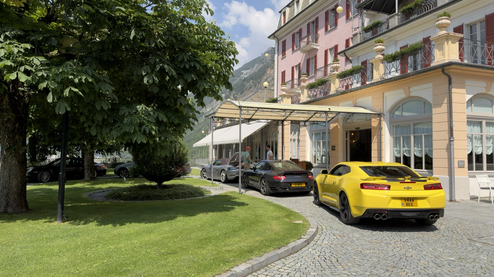
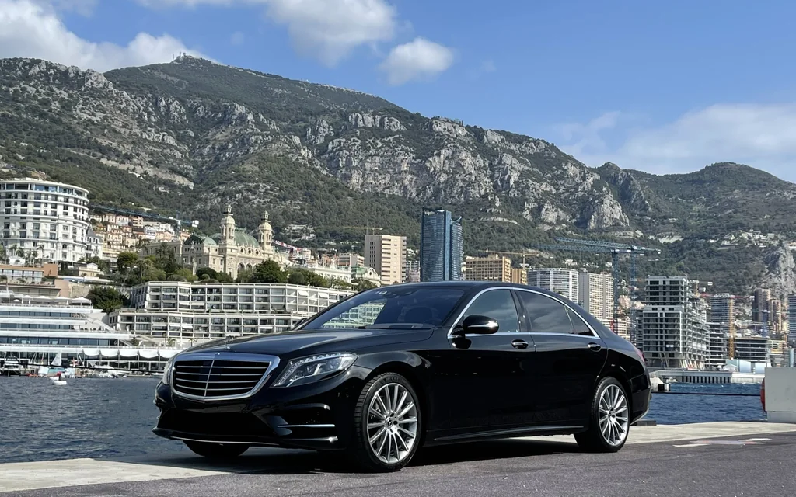
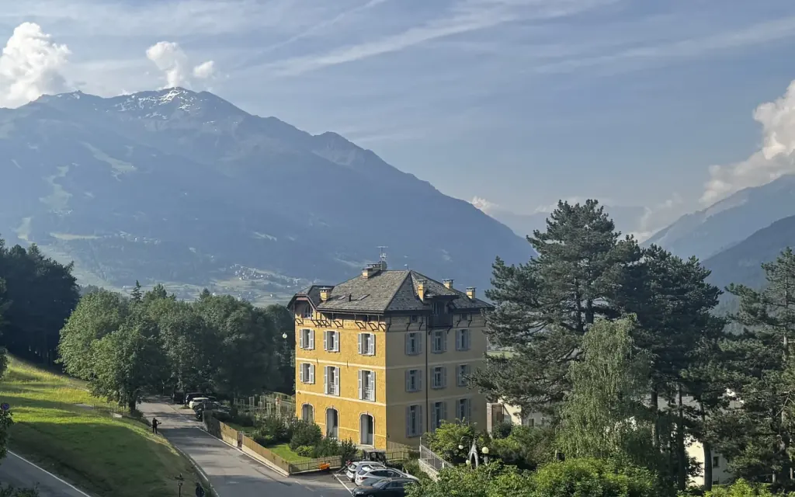
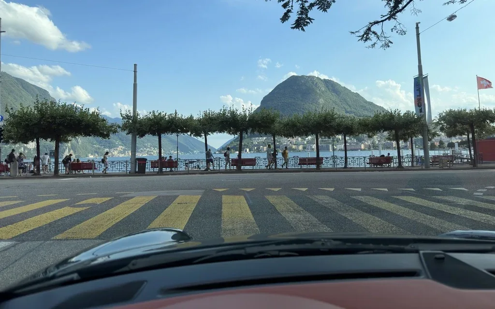
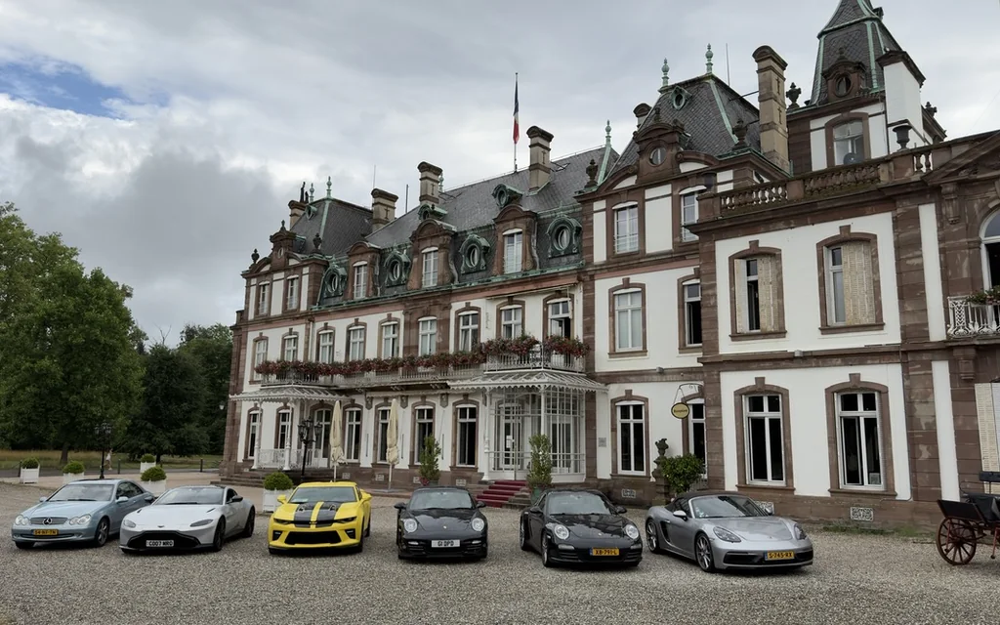

The Journey
Private road journeys across Europe for one party at a time — three days or three weeks, driven before they are offered.
Not a tour. A route written for one party, and nobody else on it.
We drive the roads ourselves, sleep in the houses, and eat where we intend to send you. What does not survive that is not proposed. You travel in your own car or one of ours, with a chauffeur, alone, or both by turn.
Our sibling house, Signature Drivers Club, brings its circle of drivers together on shared journeys across Europe. At Lohuis Signature, every commission remains private.
Four routes
Each was driven once by our own team, or by a group of people who each know their own stretch of it. Then driven again by local experts in the days before you leave, because a road in May is not the road in September.
A journey is written for one car or for several. The largest we have run outside the Signature Drivers Club was eight.
Most journeys run to one or two weeks. The Alpine routes are bound to the season and are only driven while the passes are open; on every route the weather and the road are checked before you leave, and again as you go.

St. Moritz to Monaco
Out of the Engadin, over the passes, and down to the coast by way of Lake Como.

Stuttgart to Modena
Bormio and Milan on the way into the Motor Valley.

Luxembourg to Livorno
Lucerne, then Lake Lugano, then down to the Tyrrhenian coast.

Amsterdam to Rome
The long one. Strasbourg, then Como, then south until it is Rome.
What comes with every journey.
The route
Written day by day, with alternatives already driven for weather, closures and mood.
Houses and tables
Held in advance and chosen by visit rather than by rating.
Chauffeur and support
A support vehicle comes when it is asked for: a recovery car, a second luxury car with a back-up chauffeur, or an estate, SUV or V-Class that carries the luggage straight from one house to the next.
One point of contact
From the first conversation to the last mile home.
If something goes wrong
Recovery and a replacement car are arranged either way. Usually that runs through your own insurer or the marque’s network; where it does not, we have people across Europe who will.